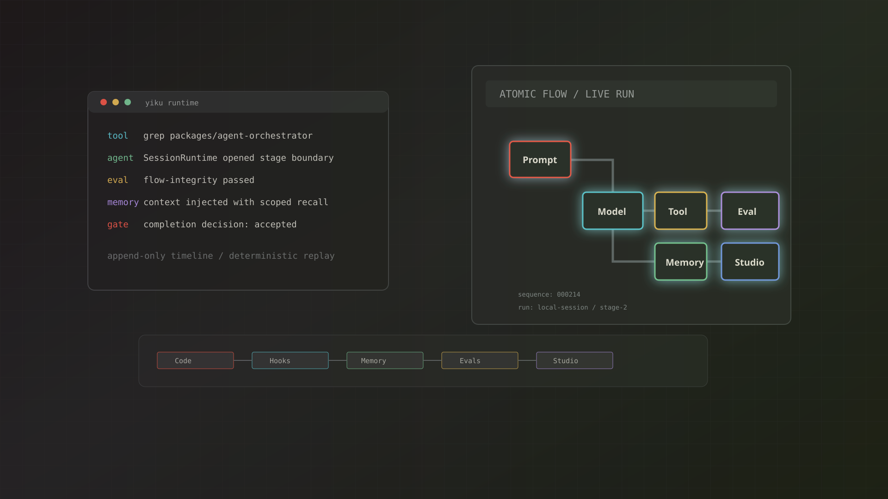
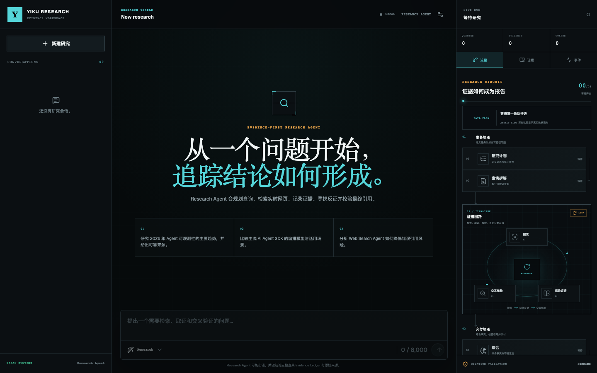
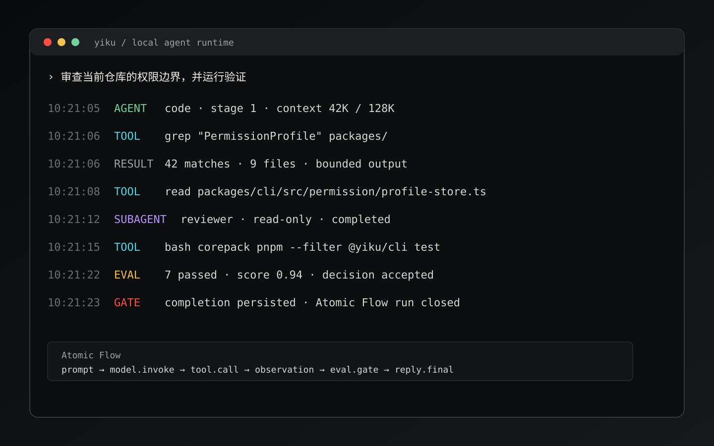
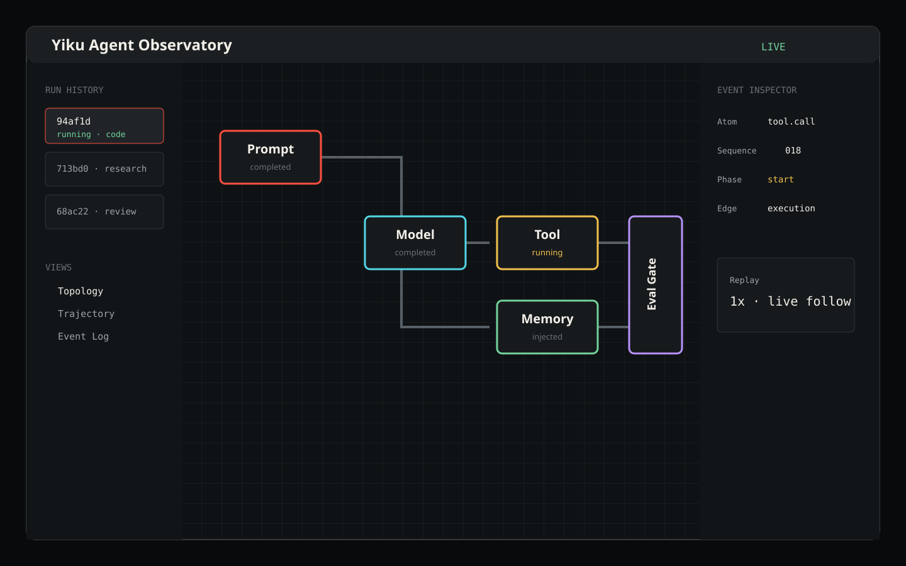

01 / Unified Runtime
交互式与自动化共用执行核心
TTY、JSON、NDJSON 和 Node Host 共享 SessionRuntime，不各自复制 Agent 逻辑。

本地 Agent 运行平台架构分享
一个面向软件工程与证据研究任务的本地 Agent 运行平台：把模型、Agent、工具、Skills、 Hooks、MCP、Memory、Evals 与可观测性收敛到同一条可恢复执行链。
CLI 只是默认宿主。真正的核心是 Orchestrator：它把一次 Prompt 变成有权限边界、有阶段预算、 有长期状态、有质量门禁、可回放的 Agent Session。
TTY、JSON、NDJSON 和 Node Host 共享 SessionRuntime，不各自复制 Agent 逻辑。
Agent 包只定义能力；只有 Orchestrator 构建并运行完整 Session。
Real Path、符号链接复检、Shell Sandbox、Permission Profile 共同收敛权限。
长任务可分 Stage 运行、压缩上下文、跨进程恢复，并保留稳定状态边界。
模型、工具、Handoff、Skill、Memory、Hook、Eval 都映射成 Atomic Atom。
领域 Validator + Eval DAG + Completion Policy 决定接受、重试或拒绝。
依赖只能向下。基础包不认识 CLI，也不认识某一种具体 Agent。
高层组合低层，协议层保持无业务依赖。下面是所有正式生产依赖的直接边。
| Package | 职责 | 直接 @yiku 依赖 |
|---|---|---|
| @yiku/cli | Ink UI、Prompt、补全、审批、时间线、Slash Command | observatory, orchestrator, atomic-flow, config, hooks, memories, trajectory |
| @yiku/agent-observatory | Yiku 默认 Studio 插件与本地 Web 观测 | orchestrator, studio, atomic-flow, config, evals, flow-graph, memories, trajectory |
| @yiku/agent-orchestrator | 完整 Session 的唯一执行组合根 | agent-code, agent-research, atomic-flow, config, evals, hooks, memories, sandbox, trajectory |
| @yiku/agent-code | Code Agent、Workspace 工具、权限与代码评估 | evals, sandbox |
| @yiku/agent-research | Evidence/Claim、研究工具、报告验证 | atomic-flow, evals |
| @yiku/evals | 评估计划、DAG 调度、Scorecard、结果存储 | atomic-flow |
| @yiku/memories | SQLite/FTS 长期记忆、混合召回与策略 | atomic-flow |
| @yiku/trajectory | Atomic Flow 的层级轨迹投影与 Renderer | atomic-flow |
| @yiku/agent-studio | 协议无关 Server、Store、SSE、React Shell、插件 SDK | 无 |
| @yiku/atomic-flow | Run 级事件、Span、Edge、Sink、JSONL、Fold | 无 |
| @yiku/config | YAML/.env 合并与 Workspace Storage 路径 | 无 |
| @yiku/flow-graph | 无 UI 依赖的正交路由与几何诊断 | 无 |
| @yiku/hooks | 生命周期策略、六类 Executor、Trust 与安全 | 无 |
| @yiku/sandbox | 平台 Shell 隔离、可用性探针与启动描述 | 无 |
这张图按层展示依赖，不把所有边画成网状线。每一层只能依赖它下面的能力，基础协议不认识 CLI、Agent 或展示层。
入口不是同义封装。越靠近底层，宿主承担的资源、策略和持久化责任越多。
Stage、预算、持久状态、Checkpoint、Task、消息、压缩与恢复。
多次 submit()，负责 Hook、Memory、Prompt Expansion、History 和 Eval。
兼容入口；自动创建并关闭 AgentSession，适合短生命周期 Node Host。
执行已构建的 Agent；不解析项目配置，也不拥有持久 Session。
顶层 Prompt 对应一个 Atomic Run；一个 Session 可以跨多个 Stage。恢复只发生在已持久化的稳定 Stage 边界，不序列化 SDK 内部 RunState。
CreateCheckpointInput { eventHead?, historyEntries: CheckpointHistoryEntry[], prompt, sessionRevision }
CheckpointRecord { id, createdAt, prompt, sessionRevision, historyEntries, eventHead?, fileCount?, totalBytes? }
ContextBudgetInput { contextWindow?, historyCharacters, peakInputTokens? } + trigger: auto | manual + customInstructions?
ContextCompactionResult { summary, preDecision?, postDecision? }; History 被替换为一条 assistant summary。
create({ prompt: "修复权限边界", sessionRevision: 12, eventHead: "evt-184",
historyEntries: [{ role: "user", content: "检查 shell 权限" }] })
→ { id: "cp-7f3a", sessionRevision: 12, fileCount: 42, totalBytes: 184320 }
budget.evaluate({ contextWindow: 128000, peakInputTokens: 92000, historyCharacters: 211400 })
→ { shouldCompact: true, reason: "tokens", maxSummaryChars: 128000 }
compact("auto") → { summary: "用户要求检查 shell 权限；已完成边界分析…" }
Stage 停止原因：完成 / Turn、Tool、时长、无进展预算 / 用户交互 / 取消 / Provider、Tool、Hook、Validator、Eval 失败
这张图按数据方向展开：用户输入从 CLI 进入 Runtime，策略服务只作为受控侧向输入， 最终输出、Memory、Eval、Atomic Flow 和 Studio 投影各自落到明确位置。
RuntimeData {
command: {
prompt, sessionId, runId
}
control: {
stage, budget, capabilityScope,
permissionDecision, hookDecision
}
execution: {
toolCall, toolResult, agentResult
}
evidence: {
artifacts, operationReceipts,
validation, scorecard
}
facts: {
messages: AgentMessageEnvelope[]
events: AtomicFlowEvent[]
}
projection: {
timeline, trajectory, observatory
}
}
submit(prompt) |- PREPARE | |- mergeConfig() | |- recallMemory(prompt) | `- intersectCapabilityScope() |- EXECUTE | `- model <-> toolMiddleware(effect) |- VERIFY | |- validateDomainOutput() | `- evaluate(plan, evidence) |- DECIDE | `- accepted | degraded | retry | | needs-review | rejected `- PERSIST + PROJECT |- SessionStore + EvalStore `- AtomicFlow -> read-only views
核心逻辑不是在模块间传递一份可变大对象，而是：命令驱动 Stage，最小能力约束副作用， Envelope 与 Atomic Event 记录事实，Artifact/Receipt/Scorecard 提供完成证据，投影层只读重建界面。
Memory 以“不可信数据”边界注入；Prompt、Tool 输出和 Atomic Payload 都做长度限制。项目内容不能提升权限，异常输入进入 Validator/Eval。
路径从 Workspace Root 解析，读写前后复检 Real Path；拒绝 ..、符号链接逃逸和命令内 cd 越界，违规直接 hard deny。
Tool 先按 Effect 分类，再合并 Permission Profile 与 Hook 决策；Shell 优先进入平台 Sandbox，显式 Host Policy 降级必须记录边界变化，远程脚本直管道仍为硬拒绝。
MCP Target 取多层 allowlist 交集；Hook 校验来源 Hash、HTTPS 和公网地址。Header 环境变量显式允许，日志与事件只保存脱敏摘要。
时序重点：Memory Recall 在 Agent 上下文构建前；Tool Hook 包围副作用；Memory Extraction 和 Evals 都在最终输出之后；Context Compact 由预算判断或 /compact 触发。
agents + code + skills + tasks
领域工具 + 通用 Skill Catalog；不自动获得 Workspace 写工具。
必须保留宿主注入工具，并保证组合后的 Tool Name 唯一。
CodeToolset 把文件系统身份、权限决策、沙箱、结果呈现和评估证据统一起来。
@yiku/sandbox 在 macOS 生成 Sandbox Profile，在 Linux 生成 rootless bubblewrap 启动描述。 包自身失败关闭；Code Terminal 仅通过显式 Host Policy 降级继续，并同步收紧权限与记录边界变化。
Before/After Digest、变更范围、Symlink 证据、Verification Command。验证命令默认禁网， isolated 模式在临时工作区执行，避免生成物污染主 Workspace。
ToolExecutionRequest { toolName, input, effect?: read|write|process|external, callId?, signal?, validate(), execute() }
CodeToolResult { isError, llmContent, display?, metadata?, error?: { code, issues? } }
{ toolName: "read", effect: "read", callId: "call-12",
input: { file_path: "README.md", line_start: 1, line_end: 40 } }
→ { isError: false, llmContent: "# Yiku…",
display: { filePath: "README.md", startLine: 1 } }
Research Agent 把检索、Evidence、Claim、反证、Citation 与 Eval 建成一条可验证链。 每个 Run 使用独立 Ledger，避免并发研究互相污染。
默认最多 50 个规范 URL；保存来源类型、访问时间、支持/反驳关系与验证状态。
默认最多 200 个结构化论断；关键事实先进入 Manifest，再检查 Citation 完整性。

控制权转移给目标 Agent。
适合专业路由；父 Agent 不等待一个“工具结果”后继续。
父 Agent 等待结果并继续。
适合并行分析、审查与研究；目标必须在 delegates allowlist 中。
可复用专家角色与运行实例分离。
通过 /agent-new、/agents、/agent:<name> 创建和运行。
Runtime 不根据“任务看起来很复杂”静默创建子 Agent。只有协作能力已经进入当前 Capability Scope，且 Main Agent 或用户触发了明确入口时才会 Spawn。
collaboration {
handoff: {
trigger: configured SDK handoff
effect: transfer control in current run
}
delegate: {
exposedWhen:
skills.includes("delegate")
&& delegates.includes(target)
spawnWhen:
mainAgent calls delegateTaskTool(input)
parent: await result, then continue
}
sessionSubagent: {
manual:
user or mainAgent names profile
proactive:
communication matches purpose + scopes
spawnWhen:
/agent:<name> or agentRunTool(input)
}
}
delegateTaskTool(input)
|- strict schema + target allowlist
|- TaskRegistry.create(task)
|- resolveIsolation(accessMode)
|- create {
| agentId, agentSessionId, taskId,
| parentAgentId, parentToolCallId
| }
|- SubagentRuntime.run()
| |- Hook(SubagentStart)
| |- child runAgentSessionTurn(prompt)
| |- MessageBus.publish(envelopes)
| `- Hook(SubagentStop)
`- return DelegateTaskResult {
output, changedFiles, patch?,
verification?, worktreeId?
}
父子 Agent 不共享一份可变 Conversation。任务输入与最终结果走 Tool/Service 调用； 过程流通过 AgentMessageEnvelope 发布；关联键把子 Tool、输出和终态挂回父 Tool Call； Atomic Flow 负责事实投影，Session Store 负责恢复。
| 模式 | 并发 | 写入语义 | 适用场景 |
|---|---|---|---|
| read-only | 受 maxParallelReaders 限制 | 不能修改；写入触发升级/拒绝 | 仓库理解、搜索、审查 |
| shared read-write | 读可并行；写串行 | WorkspaceWriteLock 只解决并发，不解决语义冲突 | 明确划分文件范围的短任务 |
| worktree | 文件系统隔离 | 独立 Git Worktree，返回变更摘要与 Patch | 高风险修改、隔离生成物 |
AgentManagementRunnerInput { instance: SessionSubagentInstance, profile: SessionSubagentProfile, prompt, parentToolCallId?, signal? }
SubagentRunResult { agentId, finalOutput, profileId, status: succeeded, taskId, usage?, validation? }
run("security-reviewer", "Review permission boundaries", { parentToolCallId: "call-17" })
→ { agentId: "agent-42", profileId: "security-reviewer", taskId: "task-9",
status: "succeeded", finalOutput: "发现 2 个边界风险",
validation: { passed: true, diagnostics: [] } }
{
"agent_key": "security-reviewer",
"prompt": "Review permission boundaries",
"access_mode": "read-only",
"isolation": "shared",
"task_id": "task-9"
}
{
"taskId": "task-9",
"output": "发现 2 个权限边界风险",
"changedFiles": [],
"verification": {
"passed": true,
"checks": []
}
}
当前 A2A 是 Yiku 进程内消息协议，不是开放网络协议。消息携带稳定身份和因果键， 但接收消息不会授予任何 Tool、Workspace、Skill 或 MCP 能力。
单 Run 严格递增；Fold 拒绝倒退与混合 Run。
表达层级，不替代流程因果。
execution / data / feedback / persistence。
只允许有界摘要；禁止密钥、完整 Prompt、无限 Tool 输出。
handoff · user.question · action.gate · context.compact · session.checkpoint · task.snapshot
research.plan · query · search · evidence-record · corroborate · synthesize · citation-validate · report
hook.dispatch · hook.execute · usage.record · trace.append · observability.degraded
每个 Sink 保序队列独立推进；失败记录降级码，其他 Sink 继续。
相同事件前缀得到相同 Fold State 与 Trajectory；支持 throughSequence。
Observatory 不创建、取消或修改 Agent Session；状态不反向控制 Runtime。
userId、agentId、projectId、sessionId 形成稳定 Scope Key；Manager 和 Store 双层校验。
scenario：decision / episode
procedure：procedure
semantic：fact / preference
结果包含相关性、质量、时效、重要性分解与选择原因，便于审计。
当前任务短期信息，独立字符预算，不自动跨 Session 晋升；完成/取消时由 Runtime 决定保留或清理。
best-effort 记录观测降级但不阻断 Session；strict 把基础设施错误提升为运行失败。
Store 持久化五种 MemoryKind，运行时再投影为三类长期记忆； working 是当前 Session 的短期层，不会自动晋升。
记录已做出的选择、适用上下文和关键理由；不是脱离场景的永久规则。
例：本仓库采用 tsc -b，因为各包使用 Project References。记录一次发生过的事件、过程与结果，用于相似场景复盘，而非抽象步骤。
例：上次构建因 Node 版本过低失败，升级到 22.13+ 后恢复。记录可重复执行的步骤、顺序与完成条件，适合直接指导后续操作。
例：先跑受影响包测试，再执行 pnpm lint 与 pnpm build。记录可验证、相对稳定的项目或领域事实；事实变化时应更新 Revision。
例：Yiku 要求 Node.js ≥ 22.13.0，包入口使用 ESM。记录用户或团队持续有效的表达、工具或工作方式偏好，不保存一次性要求。
例：工程说明保持简洁；代码检查只使用 Biome。输出是最多 20 条的严格 JSON 数组，没有 data 或 memories 包装；没有持久信息时返回 []。 推荐原始 JSON，运行时也兼容完整的 JSON Markdown 代码块。
[
{
"kind": "procedure",
"content": "修改 CLI 后依次运行聚焦测试、lint 和 build。",
"confidence": 0.90,
"importance": 0.88,
"expiresAt": "2027-01-01T00:00:00.000Z",
"tags": ["cli", "verification"],
"metadata": {
"evidence": "project-rule",
"appliesTo": "project"
}
}
]
| Field | Required | Contract | Purpose |
|---|---|---|---|
| kind | YES | 五种 MemoryKind 枚举 | 决定持久类型与运行时分类 |
| content | YES | 非空；默认 ≤ 32,768 UTF-8 bytes | 一个独立、可复用的记忆事实 |
| confidence | YES | 有限数值 0..1；默认门槛 0.55 | 低于门槛的 Draft 不会固化 |
| importance | YES | 有限数值 0..1 | 参与长期召回质量排序 |
| expiresAt | NO | 可解析日期；推荐 RFC 3339 / ISO 8601 | 写入时规范化为 ISO 时间 |
| tags | NO | ≤ 32 项；每项 ≤ 128 UTF-8 bytes | 检索过滤；写入时去重排序 |
| metadata | NO | JSON object；≤ 16 KiB；深度 ≤ 8 | 来源、证据和适用范围 |
30 个兼容事件，28 个已接入 Runtime。所有外部执行都有 Deadline、资源上限与取消传播。
Managed → User → Project → Plugin → Skill/Agent → Runtime Callback。所有匹配 Handler 都参与决策。
allow / block / defer / no-op / stop；权限建议为 allow / ask / deny。非法升级被拒绝。
Project、Local、Skill/Agent 和 User 的副作用 Handler 默认需要信任。Trust Key 包含来源、配置 Hash、 Executor、Command/Origin/MCP Target 与能力摘要；配置变化后旧信任自动失效。
HTTP 仅允许 HTTPS；DNS 解析后拒绝私网/回环，Redirect 每跳重验；Header 环境变量显式 allowlist。 审计只保存脱敏摘要，不保存 Secret 与大输出。
主链按启动、Prompt、执行循环、协作、收尾组织；每个事件都经过同一套匹配、信任、执行、 Schema 校验与决策合并。
<workspace>/.yiku/skills
~/.yiku/skills
orchestrator/src/skills/builtin
主 Agent 常驻名称与描述；匹配后通过 Inspect 按需加载正文。
/skill-name 显式激活；一次提交最多组合六个 Skill。
skillRunTool 在独立只读 Worker 中执行 Snapshot，使用独立 Agent ID 与并发预算。
达到质量与硬门禁；可选基础设施降级时保留明确标识。
修复保持同一 Task、创建新 Attempt；未知副作用和证据不足进入复核。
Blocker、Secret、Boundary Violation、Artifact Drift 不能被平均高分抵消。
Artifact Integrity、Change Scope、Verification Command；isolated 命令默认禁网。
Claim/Citation、冲突、独立域多样性、时效、权威性与报告结构；默认质量阈值 0.8。
默认调度上限：4 checks / run · 8 concurrent runs · 32 checks / run · maxRepairAttempts = 1
Planner 先验证重复 ID、未知 Evaluator、缺失依赖与环；Scheduler 再按 ordinal 和并发预算启动 Ready Check。失败依赖不会继续执行下游，而是生成可解释的 not-run 结果。
const plan = planner.createPlan({
profile, runId, taskId
});
await store.writePlan(plan);
for (;;) {
const context = createContext(output, evidence);
const scorecard =
await scheduler.run(plan, context);
await store.writeAttempt({
attempt, evidenceIndex, scorecard
});
const decision = policy.decide({
scorecard, operationReceipts,
canRepair, repairAttemptsUsed
});
await store.writeDecision(decision);
if (decision.action !== "retry") return decision;
output = await repair(decision.repairInstruction);
}
INPUT {
"flowIntegrity": {
"severity": "blocker",
"status": "failed"
},
"artifactIntegrity": {
"dependsOn": ["flowIntegrity"]
},
"verification": {
"dependsOn": ["artifactIntegrity"]
}
}
OUTPUT {
"results": [
{ "id": "flowIntegrity", "status": "failed" },
{ "id": "artifactIntegrity", "status": "not-run" },
{ "id": "verification", "status": "not-run" }
],
"decision": "rejected"
}
验证结果同时由结构化 Evidence、Check Result、Scorecard Digest 和持久化 Decision 约束； `unknown` 副作用进入 needs-review，required error/not-run 进入 needs-review，retry 最多一次， blocker 与边界违规直接优先于平均分。
用户 config.yaml → 项目 config.yaml；用户 .env → 进程环境 → 项目 .env → Host 显式 env。后者覆盖前者。
Workspace Real Path → Unicode NFKC → 规范名；发生名称冲突才追加 8 位 SHA-256 摘要。目录 0700，Owner 文件 0600。
Workspace 授权默认 TTL 7 天；Session Grant 只在当前进程。默认 network.connect 为 allow，但 Runtime 硬拒绝不可被覆盖。
Tool、Assistant、Subagent、Error 与 Eval 都进入同一 Append-only Static 时间线。 运行中的新 Prompt 进入 FIFO，不与当前模型回合并发。
@ 文件模糊补全、/ 命令、Prompt 历史、多行编辑、运行时队列。
权限审批、Hook Trust、MCP Elicitation、Resume Review、AskUserQuestion。
/resume、/branch、/rewind、/compact、/export、/model。
/skills、/agents、/memory、/hooks、/mcp、/tasks。

Agent Studio 提供协议无关的壳；Observatory 把同一个 Atomic Flow 事件前缀投影成 Run 列表、 拓扑布局、事件详情与回放位置。界面只读，不反向持有 Runtime 权限。

TypeScript Project References；正式包提供增量 watch。
不引入 ESLint 或 Prettier；统一根级规则。
测试位于包级 tests/ 并镜像 src/；四项覆盖率均 ≥ 90%。
development / types / import 入口；dist 不生成 source map。
Scheduler P95 < 100 ms
Store Commit P95 < 50 ms
RSS delta < 256 MiB
默认不依赖公网、用户 Home、真实密钥；使用临时目录、Fixture、Fake Provider。
AbortSignal 传播到 Runner、Tool、Hook、Eval 与 Repair；Store Commit 完成自身原子写入，Runtime 按逆序释放资源。
Orchestrator 同时包含 Runtime Kernel 与 Code/Research 默认装配；CLI 又重复注册默认 Factory。新增内置 Agent 需同步检查两处。
Permission、User Question、Tool Effect、Workspace Access 当前由 agent-code 定义；纯 Research Host 也要安装 Code 包。
目前没有浏览器安全、传输无关的 Session Command/Event 协议；Observatory 保持只读。
进程在副作用后退出时，恢复可能进入 completed / retry / abandon 人工复核。
通用评估包目前包含 Research Claim Manifest 与 Artifact Kind，协议尚未完全领域中立。
atomic-flow 内置 AtomicStudioSink 的 HTTP 路径与 Studio Metadata；Observatory 直接依赖多个领域 Atom Catalog。
Flow 的核心职责是把一次 Run 内的所有事实稳定排序、分发和持久化。它不执行 Agent， 不解释业务结果，也不要求每个投影都在线。
Payload 不写 API Key、完整 Prompt、无限 Tool 输出或 Provider 原始包。
相同规范事件前缀生成相同 Fold State，支持 Replay 与回归快照。
观测失败是运行事实的一部分，但不是运行失败本身。
Trajectory 不维护第二套状态。它读取 Atomic Flow 事件，把 Instance、Parent、Iteration、 Phase 和时间投影成可读步骤，再交给文本、Markdown、Mermaid 或 Observatory 展示。
projectTrajectory(events: AtomicFlowEvent[], options?: { runId?, startedAt?, throughSequence? })
Trajectory { id, startedAt, endedAt?, steps: TrajectoryStep[] }; Step 含 id, kind, name, status, parentId?, input?, output?。
projectTrajectory(events, { runId: "run-42", throughSequence: 18 })
→ { id: "run-42", startedAt: "2026-08-18T03:10:00.000Z",
steps: [
{ id: "model-1", kind: "model", name: "Model Invoke", status: "completed" },
{ id: "tool-8", kind: "tool", name: "read", parentId: "model-1", status: "completed" }
] }
@yiku/memories 独立于 Agent SDK：它提供 Store、Policy、检索、重排、上下文渲染与生命周期治理。 Orchestrator 只负责把它接入 Session 顺序。
结果带分数分解和选择原因，便于审计为什么某条记忆进入上下文。
渲染时使用明确分隔和“不可信数据”提示，避免把 Memory 当成系统指令。
forget、prune、consolidate 处理删除、过期和高重复记忆，保留来源与 Revision 语义。
RecallMemoryInput { context: MemoryContext, query, kinds?, tags?, limit?, maxChars?, signal? }
MemoryRecallResult[] { memory: MemoryRecord, reasons: MemoryRecallReason[], score, scores: { access, lexical?, quality, recency, vector? } }
RememberMemoryInput { context, content, kind, confidence?, importance?, tags?, source?, expiresAt?, metadata? }
MemoryRecord { id, namespace, scope, kind, content, source, confidence, importance, status, revision, timestamps, tags, metadata }
recall({ context: { namespace: "yiku", scope: { projectId: "project-a" } },
query: "测试文件放在哪里", kinds: ["procedure", "fact"], limit: 3, maxChars: 2400 })
→ [{ memory: { id: "mem-21", kind: "procedure", content: "测试统一位于包级 tests/" },
reasons: ["LEXICAL_MATCH", "HIGH_CONFIDENCE"], score: 0.91,
scores: { access: 0.4, lexical: 0.96, quality: 1, recency: 0.82 } }]
CLI 通过 MemoryRuntime 把项目级 SQLite 长期记忆和当前 Session Working Memory 接入 AgentSession。它不是在模型中途随意查询，而是在每次 Submit 构建 Agent 上下文前按 Prompt 检索。
MANUAL
/compact [custom instructions]
|- runs only while CLI is idle
|- bypasses ContextBudget threshold
`- maxSummaryChars = hook limit ?? 8,000
AUTO
Stage decision === "continue"
|- token ratio:
| peakInputTokens / contextWindow >= 0.7
|- fallback ratio:
| historyCharacters / 32,768 >= 0.7
`- target:
contextWindow * 0.25 * 4 chars
or 32,768 * 0.25 = 8,192 chars
AgentSession.compact(trigger)
|- require configured ContextSummarizer
|- PreCompact Hook
| `- may block / add instructions
|- summarize(history.entries, maxChars)
|- reject empty or oversized summary
|- history.replace([
| { role: "assistant", content: summary }
| ])
|- PostCompact Hook
| `- additional context appended as user
`- SessionStart(source="compact")
`- reload runtime instructions
NEXT SUBMIT
`- Memory Recall runs again from prompt
`/compact` 只改变 Conversation History，不删除 SQLite Memory、Working Memory、Task、Checkpoint 或 Atomic Flow。没有 Summarizer 时失败；CLI 注入的兼容单轮 Agent Session 不提供该命令能力。
compactAtContextRatio=0.7，目标摘要约为 compactToContextRatio=0.25。摘要替换历史为一条 assistant summary。
~/.yiku/workspaces/<storage>/memory/memories.sqlite 保存长期记忆；Working Memory 跟随 Session State。
best-effort 只记录降级；strict 会把 Memory 基础设施错误提升为运行失败。
@yiku/evals 消费最终输出、Artifact、Operation Receipt、Research Manifest 和 Atomic Snapshot。 它不执行 Agent；Orchestrator 的 EvaluationCoordinator 把评估结果映射到完成策略。
当前仓库没有单独的 @yiku/harness 包。这里的 Harness 指把 Runtime 接到不同宿主和验证场景的外壳： CLI、非交互输出、自定义 Node Host、Playground、Observatory 和 Eval Verification Command。
@yiku/cli
|- CliSessionBootstrap
| `- config + trust + durable state
|- CliAgentSession
| |- Factory Registry
| |- Hook + Permission handlers
| |- MCP + Memory + Eval resources
| `- output: Ink | JSON | NDJSON
`- SessionRuntime
|- Stage + resume + checkpoint
|- Task + message + compact
`- AgentSession
`- graph + capability + submit
Node integrations choose one level:
runAgentSession() | AgentSession | SessionRuntime
HOST OWNS |- terminal / HTTP / custom UI |- permission + question interaction |- externally injected resources `- final output and exit-code projection RUNTIME OWNS |- resources it creates |- AbortSignal propagation |- reverse-order close, then Session close `- stable Stage recovery boundaries VERIFICATION HARNESS |- structured command + args |- explicit cwd and bounded output |- isolated temporary workspace `- network deny; no host fallback OBSERVATORY `- read-only Atomic Flow projection
Harness 不拥有 Agent Graph、业务 Prompt 或领域 Validator。它只负责把宿主协议接到 Orchestrator、提供交互回调、管理资源生命周期并把统一事件投影成对应输出格式。
Harness 不构建 Agent Graph；Agent Graph 仍由 Orchestrator 和 AgentFactoryRegistry 处理。
跨进程恢复从持久 Stage 边界继续，不尝试序列化 Provider SDK 内部 RunState。
浏览器端只观测；Workspace Tool、密钥、权限决策留在 Node 进程。
@yiku/sandbox 接收已授权的 Workspace、网络策略和运行时只读路径， 生成可交给 Node spawn() 的启动描述。命令分类、审批、子进程管理和 Host Policy 降级始终由上层拥有。
launchSpec {
command: "/usr/bin/sandbox-exec"
args: [
"-p",
"(deny default)",
"(allow process*)",
"(allow file-read* runtime-roots)",
"(allow file-write* workspace ~/.yiku)",
network === "allow"
? "(allow network*)" : ""
]
environment: {
HOME: privateHome,
TMPDIR: privateTemp
}
}
launchSpec {
command: "bwrap"
args: [
"--unshare-all", "--cap-drop", "ALL",
"--tmpfs", "/tmp",
"--ro-bind", runtimeRoot, runtimeRoot,
access === "read-only"
? ["--ro-bind", workspace, workspace]
: ["--bind", workspace, workspace],
network === "allow" ? "--share-net" : [],
"--chdir", cwd, "--", shellPath
]
}
Workspace 与 ~/.yiku 必须先由上层完成 Real Path 授权； macOS 通过 deny-default Profile 和私有 Home/Temp 收口，Linux 通过 Namespace、只读运行时挂载、 Workspace bind 与 Network Namespace 收口。隔离器不可用时抛出 SHELL_SANDBOX_UNAVAILABLE，不会在包内静默回退 Host。
macOS 临时目录属于 Sandbox 实例；所有使用其启动描述的子进程退出后才能 close()。
HostPolicyShellSandbox 是显式弱边界。Code Terminal 可记录降级后继续，Verification Command 必须拒绝。
持久 BashTerminal、结构化 Verification Command 和自定义 Node Host 共享同一启动契约。
权限链路把 Workspace 边界、命令风险、Session Grant、长期 Profile、Hook 建议和 Runtime 硬拒绝合并成一个可解释决策。
PermissionRequest { capabilities, normalizedAction, policyId, workspaceId, action, metadata?, reason, risk, subject, toolCallId?, toolName }
PermissionResponse { decision: allow|deny, reason?, scope?: once|session|persistent }; ask 仅是审批前的 Assessment。
{ toolName: "bashTool", toolCallId: "call-17", workspaceId: "project-a",
capabilities: ["process.execute", "workspace.delete"],
normalizedAction: "recursively force-remove workspace paths",
action: "execute command", subject: "rm -rf ./dist",
policyId: "recursive-force-rm", risk: "high",
reason: "recursively force-removes files or directories" }
→ { decision: "allow", scope: "once", reason: "仅允许本次删除命令" }
Skill Catalog 常驻名称、描述、来源和 Digest；正文按需 Inspect，运行时生成 Snapshot，并在只读 Worker 中隔离执行。
snapshot(names: readonly string[], agentType: string)；先按名称、Agent Type 与 MCP Policy 解析。
SkillSnapshot { name, description, instructions, version, digest, source, path, agentTypes, mcpTargets, allowedTools?, resolvedAt }
SkillWorkerRunInput { prompt, snapshot: SkillSnapshot, workerId, signal? }
SkillWorkerResult { output, skillName, status: succeeded, workerId }
snapshot(["code-review"], "code")
→ { name: "code-review", source: "builtin", digest: "8f…c2",
agentTypes: ["code"], mcpTargets: [], resolvedAt: "2026-08-18T03:10:00.000Z" }
worker.run(snapshot, "审查当前 diff")
→ { workerId: "worker-3", skillName: "code-review",
status: "succeeded", output: "发现 2 个高置信度问题" }
Hook Engine 负责编译配置、匹配事件、调度六类 Executor、合并 Decision、记录脱敏审计；Runtime 负责尊重最终边界。
Research Factory 组合 Web Search、Evidence、Claim、Research Flow Tracker、报告 Validator 和 Research Eval，让结论必须先有结构化证据。
Node v22.22.3 · pnpm 11.17.0 · tsc -b · Agent Observatory Vite build，1,863 个模块完成转换。
这是 Yiku 与“把工具接到 LLM 上”的本质区别。